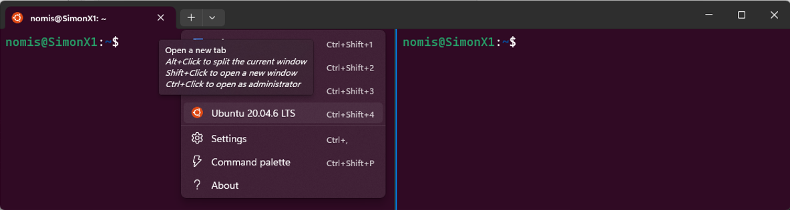
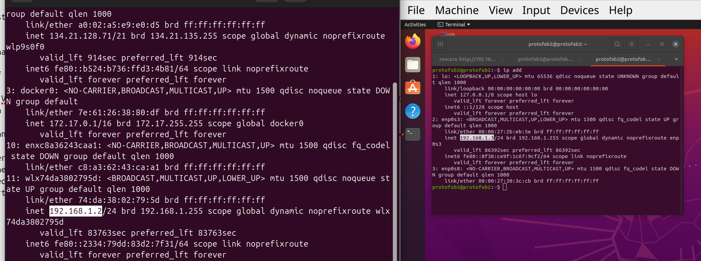
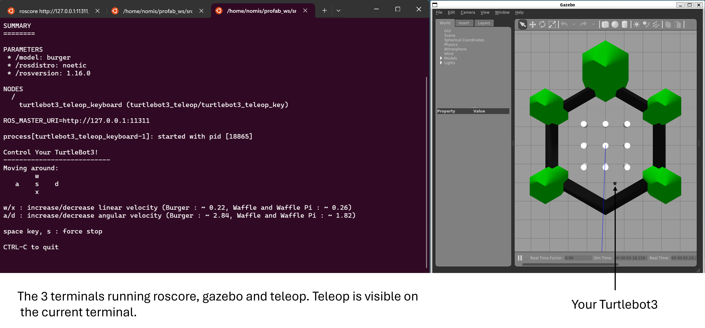

Introduction to ROS
Human-IST, ProtoFab, LearningLab, UniFR
ProtoFab assignment 1: ROS and Turtlebot3 Installation
Introduction
Robot Operating System (ROS) is an open-source framework that helps researchers and developers build and reuse code between robotics applications. Like most tools developed for robotics, it is mainly meant to work on Linux. Windows support is very limited and often dodgy.
In this document, we explain how to install ROS and the necessary packages to handle the Turtlebot3 robot that we will be using this year. The process should take about 30-60 minutes; mostly consisting in waiting for download and installation steps to complete.
Please make sure you have everything installed and ready for next week as we will be starting to use these tools for the assignment #2 !
Important remarks:
For Native Linux users: you should not have much difficulty installing the system and running it. Make sure you use Ubuntu 20.04. If you wish to keep a more up-to-date distribution for your normal work, you can use virtualbox and install Ubuntu 20.04 on a VM (see below for instructions).
For Windows users: there are several options available: dual boot (Windows, Linux), virtual machine or running Linux with Windows Subsystem for Linux (WSL2). WSL lets developers install a Linux distribution (such as Ubuntu, OpenSUSE, Kali, Debian, Arch Linux, etc) and use Linux applications, utilities, and Bash command-line tools directly from Windows, unmodified, without the overhead of a traditional virtual machine or dual-boot setup. On the downside, networking and access to hardware material connected to the machine is sometimes slightly trickier (access to USB ports, access to network, etc.) and will generally require some work around to work as expected. We provide the instructions to install Ubuntu on WSL2 below, our recommended solution for Windows users.
For Mac users: recent Macs have very limited compatibility with Linux. We apologize but there is not much you can do. UTM and Parallels might work but we have not tested and cannot provide support.
For all: each ROS version is only guaranteed to be compatible with specific Linux distributions. We highly recommend that you use the versions indicated below to ensure compatibility with the future assignments. Please do not install ROS2 as it is very different from ROS1.
Note that we have tested and validated the future assignments of the course using the distribution mentioned below. We will not provide support for other versions. Therefore, we strongly suggest you install these exact versions:
Ubuntu 20.04 LTS
ROS1 Noetic
Pre-requesites
- Basic knowledge of the Linux commands
Install Ubuntu on Windows
This section is specific for Windows users. You will install Ubuntu using WSL2. For linux native users see next section
Requirements:
- You need Windows 10 or Windows 11 to use WSL2.
How to install Ubuntu on Windows using WSL2
You can follow the tutorial provided on the link below to install Ubuntu 20.04 LTS on Windows:
https://canonical-ubuntu-wsl.readthedocs-hosted.com/en/latest/guides/install-ubuntu-wsl2/
Once Ubuntu (20.04) has been successfully installed on your machine, you can start it from a Powershell terminal.
Open a Windows Powershell Terminal
Click on the little arrow on the top-menu and select Ubuntu to start a new terminal. You can start as many terminals as you want.
Hint: If you hold “Alt” while clicking on Ubuntu, the terminal will be split in multiple windows instead of creating a new tab (see screenshot below).

Finally, we highly recommend that you set your Ubuntu in mirrored mode. Doing so will ensure that you have the same network (IP) for both Ubuntu and your Windows OS. You can find more details on this link and this link.
To enable mirrored mode, create a .wslconfig file in your Windows home user directory (C:\Users\YourUserName) and insert the lines provided below in your file.
# Content of the .wslconfig file located in (C:\Users\YourUserName)
# Note that theses settings apply across all Linux distros running on WSL 2 (.wslconfig)
[wsl2]
networkingMode=mirrored Now restart your WSL (“wsl –shutdown” from a Powershell terminal) and finally start a new Ubuntu terminal. You can check if the operation was succesful using the command below from your Ubuntu terminal (it should report “mirrored”).
[localpc-terminal] wslinfo --networking-modeInstall Ubuntu on Linux
This section is specific for Linux native users. You will install Ubuntu 20.04 as required for ROS using virtualbox.
Requirements:
- You need to install vritualbox
[localpc-terminal] sudo apt install virtualboxHow to install Ubuntu 20.04 on Linux using virtualbox
You can follow the tutorial provided on the link below to install Ubuntu 20.04 LTS on virtualbox:
https://www.pragmaticlinux.com/2021/04/how-to-install-ubuntu-desktop-20-04-lts-in-virtualbox/
Once Ubuntu (20.04) has been successfully installed, you need to configure the network to share the connection with your host machine.
Open the VM Settings \(\rightarrow\) Network. You should have a default NAT adapter enabled
Enable a second adapter, choosing
Bridged Adapter'' and selecting the identifier of your wifi adapter (usually looking like wlxxxxx), expand theAdvanced’’ menu, selectAllow All'' for the Promiscuous Mode, and finally tick theCable Connected’’ box, and press OKOn your host machine, check your IP address
[localpc-terminal] ip add
Start your VM, check that your IP addpress has the same kind of value than the host. If you cannot get a connection, make sure you are indeed connected to the adpater through Devices \(\rightarrow\) Network \(\rightarrow\) Connect Network Adapter 2.
If you cannot establish a connection (make sure your host is connected to the wifi first), your wifi adapter might not allow it. To resolve this, follow these steps: 1. Insert a USB Wifi adapter (we can provide one) 2. Connect this adapter to the Wifi on the host machine 3. Select this adapter for the bridged adapter in the VM settings 4. Start your VM and check the IP address
Install and configure ROS Noetic (with Turtlebot3)
Now that you have a working Ubuntu (20.04) on your machine, you can simply follow the instructions below to install ROS and the necessary packages to manage the Turtlebot3 robot.
The instructions have been adapted/inspired from the official Turtlebot3 manual. If you look information from the official manual mentioned above, make sure you select the right ROS version: Noetic (on the top of the page).
WARNING: it is important to use the right version of ROS (Noetic) for the right version of Ubuntu (20.04), otherwise it is not guaranteed to work. There is a more recent version of ROS (ROS2), however we decided to use ROS1 as it is still more widely used in research and has more examples and modules available.
Install ROS Noetic using the commands below
Note: Updating and upgrading can take some time … be patient[localpc-terminal] sudo apt update [localpc-terminal] sudo apt upgrade [localpc-terminal] wget https://raw.githubusercontent.com/ROBOTIS-GIT/robotis_tools/master/install_ros_noetic.sh [localpc-terminal] chmod 755 ./install_ros_noetic.sh [localpc-terminal] bash ./install_ros_noetic.shInstall necessary packages for ROS
[localpc-terminal-1] sudo apt install ros-noetic-joy ros-noetic-teleop-twist-joy ros-noetic-teleop-twist-keyboard ros-noetic-laser-proc ros-noetic-rgbd-launch ros-noetic-rosserial-arduino ros-noetic-rosserial-python ros-noetic-rosserial-client ros-noetic-rosserial-msgs ros-noetic-amcl ros-noetic-map-server ros-noetic-move-base ros-noetic-urdf ros-noetic-xacro ros-noetic-compressed-image-transport ros-noetic-rqt* ros-noetic-rviz ros-noetic-gmapping ros-noetic-navigation ros-noetic-interactive-markersSource your base catkin_ws workspace and build it
[localpc-terminal] source ~/catkin_ws/devel/setup.bash [localpc-terminal] cd ~/catkin_ws/ [localpc-terminal] catkin_makeDownload and install the Turtlebot3 packages (3 packages for real robot and 1 for simulating the robot)
[localpc-terminal] mkdir -p ~/profab_ws/src [localpc-terminal] cd ~/profab_ws/src/ [localpc-terminal] git clone -b noetic https://github.com/ROBOTIS-GIT/DynamixelSDK.git [localpc-terminal] git clone -b noetic https://github.com/ROBOTIS-GIT/turtlebot3_msgs.git [localpc-terminal] git clone -b noetic https://github.com/ROBOTIS-GIT/turtlebot3.git [localpc-terminal] git clone -b noetic https://github.com/ROBOTIS-GIT/turtlebot3_simulations.git [localpc-terminal] cd ~/profab_ws/ [localpc-terminal] catkin_make
Hint: Once you installed everything, I suggest sourcing your workspaces in your “~/.bashrc” file to ensure you can run the command from any terminal. To do so, open your “~/.bashrc” file and add the following lines to the file: “source ~/profab_ws/devel/devel.bash” and “source ~/catkin_ws/devel/devel.bash”. To open the file, you can either use the “nano” command line editor or use “code” if you prefer working with a GUI (“code” should open visual studio code).
Go to your home directory and open your bashrc file
[localpc-terminal] cd ~ [localpc-terminal] code .bashrc or, in a single command [localpc-terminal] code ~/.bashrcSource your bashrc file to apply changes. Source it on all your open terminals (if any)
[localpc-terminal] source ~/.bashrc
Here are the lines I added in my own .bashrc file
# Added for ROS integration within terminals
source ~/catkin_ws/devel/setup.bash
source ~/profab_ws/devel/setup.bash
# Added by SR to enable graphical library use for ROS. This is needed for the turtlebot3 simulation to work properly and to avoid errors related to OpenGL when running rviz or Gazebo.
export LIBGL_ALWAYS_SOFTWARE=1
export TURTLEBOT3_MODEL=burger
# Real robot (parameters to use when using real robot. Please update IPs according to your system)
#export ROS_MASTER_URI=http://192.168.176.24:11311
#export ROS_HOSTNAME=192.168.17.24
# Simulation (parameters to use when using Gazebo and simulated Turtelbot3)
export ROS_MASTER_URI=http://127.0.0.1:11311
export ROS_HOSTNAME=127.0.0.1For your personal knowledge: What is a bashrc file? It is an important script that allows users(and geeks) to customize their Bash shell environment on Linux systems. The .bashrc file is your personal script that automatically configures your environment every time you open a new terminal window, enabling personalization through aliases, functions, environment variables and command execution.
Quick Test
To verify the success of your installation, you can start the following commands. Note that each command must be run in a distinct terminal. You should be able to see the turtlebot simulation as illustrated in the figure below.
In a first terminal, start roscore. Roscore is the main server orchestrating ROS.
[localpc-terminal-1] roscoreIn a second terminal, start gazebo simulator with the Turtlebot3 world Note: you can also use turtlebot3_empty_world.launch to start an empty world intead and save some computational resources.
[localpc-terminal-2] roslaunch turtlebot3_gazebo turtlebot3_world.launchIn a third terminal, start teleop to operate the robot. You should now be able to move the robot using “awsdx” keys on your keyboard. (The focus must be set on the teleop terminal)
[localpc-terminal-3] roslaunch turtlebot3_teleop turtlebot3_teleop_key.launch
